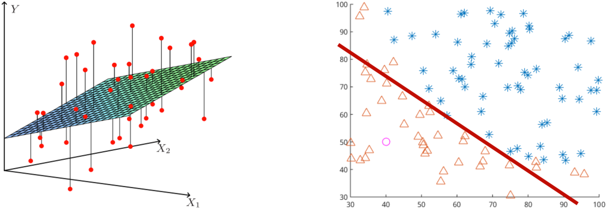
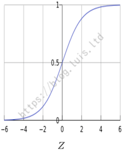
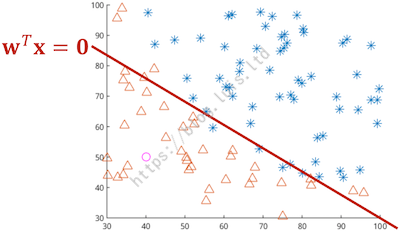
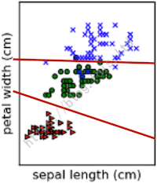
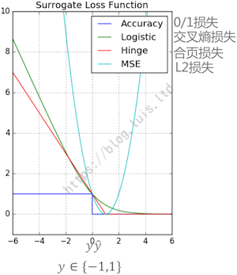
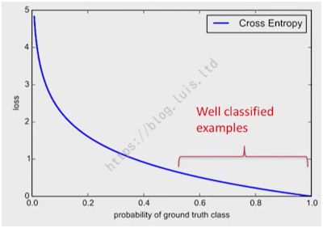

ML入门-Logistic回归简介
1. Logistic回归简介
回归任务和分类任务都属于有监督学习（Supervised Learning），其训练数据的格式为：$D = { X_i, y_i }^N_{i = 1}$。回归任务中 $y_i \in R$，而分类任务中 $y_i \in C, C = { 1, \cdots c }$，任务目标都为：学习一个从输入 $X$ 到输出 $y$ 的映射 $f$。分类任务的图示如下：

典型的分类任务有：垃圾邮件过滤、手写数字/文本识别、语音识别、人脸识别、医疗诊断、金融风控等。
贝努力（Bernoulli）分布：$y \sim Bernoulli(\mu)$，其中 $\mu$ 为分布的期望，表示 $y = 1$ 的概率。则该分布的概率密度函数为：
$
p(y; \mu) = \mu^y (1 - \mu)^{(1 - y)}
$
以两类分类为例。两类分类任务中，假设样本的输出为 $y_i \in { 0, 1 }$，当给定输入 $X$ 的情况下，输出 y 符合贝努力分布：
$
y | X \sim Bernoulli(\mu (X))
$
其中期望 $\mu (X)$ 表示在给定 $X$ 的情况下，$y = 1$ 的概率。则其概率密度函数为：
$
p(y | X; \mu) = \mu (X)^y (1 - \mu (X))^{1 - y}
$
$
p(y = 1) = \mu(X), \quad p(y = 0) = 1 - \mu (X)
$
1.1 Sigmoid函数
当选择最简单的线性模型来表示期望 $\mu (X)$ 时，即 $\mu (X) = W^T X$，期望 $\mu(X)$ 表示 $y = 1$ 的概率，因此 $\mu (X) \in [0, 1]$，而 $W^T X \in (- \infty, + \infty)$，因此需要把 $(- \infty, + \infty)$ 缩放到 $[0, 1]$：Sigmoid 函数。
Sigmoid 函数表达式为：$\sigma (z) = \dfrac {1} {1 + e^{-z}}$，其图形如下：

Sigmoid 函数亦被称为 Logistic 函数或 Logit 函数，Logistic 回归亦被称为 Logit 回归。
@注：LogisticRegression 虽然名字上用了“回归”，但实际上是分类算法。
使用 Sigmoid 函数对 $W^T X$ 缩放后得到：
$
p(y = 1 | X) = \mu (X) = \sigma (W^T X)
$
$
p(y = 0 | X) = 1 - \mu (x) = 1 - \sigma (W^T X)
$
定义一个事件的几率（Odd，与概率 Probability 不是一个概念）为该事件发生的概率与不发生的概率的比值：
$
\dfrac {p(y = 1 | X)} {p(y = 0 | X)} = \dfrac {\sigma (W^T X)} {1 - \sigma (W^T X)} = \dfrac {\dfrac {1} {1 + e^{- W^T X}}} {\dfrac {e^{- W^T X}} {1 + e^{- W^T X}}} = e^{W^T X}
$
两边同取 $\log$ 运算，得到 对数几率：$\log \dfrac {p(y = 1 | X)} {p(y = 0 | X)} = \log (e^{W^T X}) = W^T X$。
当 $p(y = 1 | X) > p(y = 0 | X)$ 时，如果取最大后验概率，即输入 $X$ 的类别取 $y = 1$，则有：
$
\dfrac {p(y = 1 | X)} {p(y = 0 | X)} > 0, \Longrightarrow \log \dfrac {p(y = 1 | X)} {p(y = 0 | X)} = W^T X > 0
$
① 当 $W^T X > 0$ 时，$p(y = 1 | X) > p(y = 0 | X)$，因此可以认为输入 $X$ 对应的类别为 $y = 1$。
② 当 $W^T X < 0$ 时，$p(y = 1 | X) < p(y = 0 | X)$，因此可以认为输入 $X$ 对应的类别为 $y = 0$。
③ 当 $W^T X = 0$ 时，$p(y = 1 | X) = p(y = 0 | X)$，输入 $X$ 对应的类别可以是 1 或 0，此时 $X$ 位于决策面上，可以将 $X$ 分类到任意类别，或拒绝作出判断。
令决策函数 $f(X) = W^T X$，其根据 $W^T X$ 的符号将输入控件 $X$ 分出两个区域。由于 $W^T X$ 为线性函数，因此 Logistic 回归模型是一个线性分类器。一个线性分类模型实例如下：

1.2 决策边界
更一般地：根据需要划分的类别，分类器将输入控件 $X$ 划分为一些互不相交的区域。这些区域的边界叫决策边界（Decision Boundaries）。根据预测函数 $f$ 的不同，会使得决策面或光滑、或粗糙。
当决策面是输入 $X$ 的线性函数时，称为线性决策面，对应的分类器就是线性分类器。
分类器为每个类别分配一个判别函数，根据判别函数来判断一个新样本属于该类别的可能性，然后将新样本归类为可能性最大的一类。假设有 C 个类别，则对应有 C 个判别函数：$\delta_c (X), c \in { 1, \cdots, C }$。
对一个新样本 $X$，通常是找到最大的 $\delta_c (X)$，即该样本的类别为：
$$
\hat{y} = \arg_c \max \delta_c (X)
$$
判别函数 $\delta_c (X)$ 和 $\delta_k (X)$ 相等的点的集合，就是分类 C 和分类 K 之间的决策面：

例如两类分类问题中，决策函数 $f_1 = p(y = 1 | X)$ 即为类别 $y = 1$ 的判别函数，决策函数 $f_0 = p(y = 0 | X)$ 即为类别 $y = 0$ 的判别函数。若对一新样本 $X$，有 $f_1 (X) > f_0 (X)$，则新样本 $X$ 被分入类别 $y = 1$。
2. Logistic损失函数
2.1 负log似然损失
以两类分类问题为例，直观地，可以定义一种损失：0 / 1 损失，预测类别正确时预测损失为 0，否则为 1。记为：
$
L(y, \hat{y}) = \left {
\begin{aligned}
0, && {y = \hat{y}}
\
1, && {y \ne \hat{y}}
\end{aligned}
\right.
$
但 0 / 1 损失不连续，优化计算不方便。因此需要寻找其他 替代损失函数（Surrogate Loss Function）。替代损失函数应当符合几个特征：
- 通常是凸函数，计算方便。
- 与 0 / 1 损失函数具有等效性。
下图列举了几种不同的损失函数：

图中横轴为 $y \hat{y}$ 取值，纵轴为损失。
定义两类分类中，真值 $y$ 只有两种取值：$y \in { 1, -1 }$，而预测值可取连续值：$\hat{y} \in { - \infty, + \infty }$，以符号区分预测值的预测类别（正数对应类别 1，负数对应类别 -1），当 $y$ 和 $\hat{y}$ 符号相同时（即 $y \hat{y} > 0$，对应图中横坐标右半部分）表示预测正确，此时损失为 0。反之亦然。
可以看出，浅蓝色曲线 L2 损失并不能很好地代替 0 / 1 损失，因此优化 L2 损失并不能很好地优化模型的准确度。
整理 Logistic 回归模型：$y | X \sim Bernoulli (\mu (X))$，对应的概率密度函数为：
$
p(y | X; \mu (X)) = \mu (X)^y (1 - \mu (X))^{(1 - y)}
$
其中，$\mu (X)$ 是线性模型经过 Sigmoid 变化而来：$\mu (X) = \sigma (W^T X)$。
Logistic 的似然函数为：$likelihood (f) = p(D) = \prod^N_{i = 1} p(y_i | x_i)$，则 $\log$ 似然函数为：
$
\begin{aligned}
l(\mu) &= \log p(D) = \log \prod^N_{i = 1} p(y_i | x_i) = \sum^N_{i = 1} \log p(y_i | x_i)
\
&= \sum^N_{i = 1} \log \left( \mu (X_i)^{y_i} (1 - \mu (X_i))^{(1 - y_i)} \right)
\
&= \sum^N_{i = 1} y_i \log (\mu (X_i)) + (1 - y_i) \log (1 - \mu (X_i))
\end{aligned}
$
取极大似然估计 ：
$
\begin{aligned}
\max l(\mu) &= - \min l(\mu)
\
&= \min - \left( \sum^N_{i = 1} y_i \log (\mu (X_i)) + (1 - y_i) \log (1 - \mu (X_i)) \right)
\
&= \min \sum^N_{i = 1} - y_i \log (\mu (X_i)) - (1 - y_i) \log (1 - \mu (X_i))
\end{aligned}
$
因此极大似然估计等价于最小训练集上的负 $\log$ 损失。而负 $\log$ 似然损失亦被称为 Logistic 损失。
2.2 交叉熵损失
Logistic 损失亦被称为 交叉熵损失（Corss Entropy Loss, CE）。
交叉熵损失：两个分布之间的差异（已知真实分布的情况下，预测分布与真实分布之间的差异）。定义交叉熵 $H(p, q)$ 如下：
$$
\begin{aligned}
H(p, q) &= \sum_x p(x) \log (\dfrac {1} {q(x)})
\
&= - \sum_x p(x) \log (q(x))
\end{aligned}
$$
假设预测值 $\hat{y} = 1$ 的概率为 $\mu (X)$，即 $\hat{y} \sim Bernoulli (\mu (X))$，则预测值 $\hat{y} = 0$ 的概率为 $1 - \mu (X)$。
（1）假设已知真值 $y = 1$，即 $y | X \sim Bernoulli (1)$，即在已知真值 $y = 1$ 的情况下，$y$ 取 1 的概率 $\mu = p(y = 1) = 1$，因此 $y = 0$ 的概率 $p(y = 0) = 0$。则这两个分布之间的交叉熵为：
$
\begin{aligned}
CE(y = 1, \hat{y}) &= - \sum_y p(y | X) \log p(\hat{y} | X)
\
&= \left( - p(y = 1 | X) \log p(\hat{y} = 1 | X) \right) + \left( - p(y = 0 | X) \log p(\hat{y} = 0 | X) \right)
\
&= - \log \mu (X)
\end{aligned}
$
（2）同理，假设已知真值 $y = 0$，即 $y | X \sim Bernoulli (0)$，因此 $\mu = p(y = 1) = 0$，$p(y = 0) = 1$，此时这两个分布之间的交叉熵为：
$
\begin{aligned}
CE(y = 0, \hat{y}) &= - \sum_y p(y | X) \log p(\hat{y} | X)
\
&= \left( - p(y = 1 | X) \log p(\hat{y} = 1 | X) \right) + \left( - p(y = 0 | X) \log p(\hat{y} = 0 | X) \right)
\
&= - \log (1 - \mu (X))
\end{aligned}
$
整理合并得：
$
CE(y, \hat{y}) = \left {
\begin{aligned}
& - \log \mu (X), && {y = 1}
\
& - \log (1 - \mu (X)), && {Otherwise}
\end{aligned}
\right.
$
定义 $p_t$（Probability of Ground Truth Class）为：
$
p_t = \left {
\begin{aligned}
& \mu (X), && {if (y = 1)}
\
& 1 - \mu (X), && {Otherwise}
\end{aligned}
\right.
$
则可得到交叉熵损失简洁表达式：
$$
CE(y, \hat{y}) = - \log (p_t)
$$
交叉熵损失与 $p_t$ 的关系曲线如下：

@注：对 $p_t$ 的理解：根据 $p_t$ 的表达式，当真实值 $y = 1$ 时，$p_t = \mu (X)$。由于 $\mu (X)$ 表示的是预测值 $\hat{y} = 1$ 的概率，因此 $p_t$ 即表示预测分布接近真实分布的概率。因此 $p_t$ 越大，表示预测越准确，同时对应的交叉熵损失 $Loss = - \log (p_t)$ 也就越小，与图中曲线含义相同。
3. Logistic正则项
Logistic 回归采用 Logistic 损失 / 交叉熵损失，由于预测值 $\hat{y} = 1$ 的概率为 $\mu (X)$，因此可使用 $\mu (X)$ 表示 $\hat{y}$：
$
\begin{aligned}
& L(y, \mu(X)) = -y \log (\mu (X)) - (1- y) \log (1 - \mu (X))
\
& \mu (X) = \sigma (W^T X)
\end{aligned}
$
Logistic 回归的目标函数同样包括训练集上的损失和与正则项，正则项同样可选 L1 正则、L2 正则、或 L1 + L2 正则。
假设有一个两类分类任务，且训练样本完全可分（即所有同类样本均可被分对），为了使 Logistic 损失和最小（完全可分时最小损失和即为 0），则对每个样本有：$L(y_i, \mu (x_i)) = 0$。当想要使得每个样本损失均为 0 时，即：
① 对于每个真实值 $y_i = 1$ 的样本，其预测值 $\hat{y} = 1$ 的概率为 1（必定预测分类为 1），也即 $\mu (X) = 1$。
② 而对于每个真实值 $y_i = 0$ 的样本，其预测值 $\hat{y} = 1$ 的概率为 0（不可能预测分类为 1），也即 $\mu (X) = 0$。
由于 $\mu (X) = \sigma (W^T X)$ 是将线性模型 $W^T X$ 经过 Sigmoid 变化而来，Sigmoid 图形如下：
当 $\mu (X)$ 取 $\pm 1$ 时，$W^T X$ 取 $\pm \infty$，也即 $|W_j| = \infty$，这样的模型是无意义的。
因此 Logistic 回归必须加正则！
@注：Scikit-Learn 中实现的 Logistic 回归
LogisticRegression默认为 L2 正则。
与 SVM 类似的是，Logistic 回归的超参数 $C$ 加在损失函数上：
$$
J(W; \lambda) = C \sum^N_{i = 1} L(y_i, \mu (x_i; W)) + R(W)
$$
4. Scikit-Learn中的Logistic
Scikit-Learn 中实现了 3 种 Logistic 回归：
LogisticRegressionLogisticRegressionCVSGDClassifier
① LogisticRegression 是最原始的 Logistic 回归模型，超参数调优时需要手动搭配 GridSearchCV 使用。② LogisticRegressionCV 是 Scikit-Learn 提供的已集成了交叉验证的 Logistic 回归模型，可以直接使用内置的交叉验证对超参数调优。③ SGDClassifier（随机梯度下降分类）则是在样本数很大（样本数 $N > 10^5$，特征数 $M > 10^5$）时效果更好。
4.1 LogitsicRegression
1 | # class sklearn.linear_model.LogisticRegression |
（1）LogitsicRegression 的参数
penalty：
惩罚函数 / 正则函数，默认：’L2’。
支持 L2 正则和 L1 正则。选择 L1 正则时优化器可选 ‘liblinear’ 和 ‘saga’。
dual：
是否是对偶问题求解，默认：False。
是原问题（primal）还是对偶问题（dual）求解。对偶问题只支持 L2 正则和 ‘liblinear’ 优化器。
tol：
迭代终止判据的误差范围，默认：$10^{-4}$。
C：
交叉熵损失函数系数，默认：1。
fit_intercept：
是否在决策函数中加入截距项。默认：True。
如果数据已经中心化，则不需要拟合截距项。
intercept_scaling：
截距缩放因子。
当 fit_intercept 为 True 且优化器 solver 设置为 liblinear 时有效。输入为 [X, self.intercept_scaling]，即对输入特征插入 1 维常数项。由于增加的常数项系数也受到 L1 / L2 正则的惩罚，因此要适当增大常数项。
class_weight：
不同类别样本的权重。默认：None。
可指定每类样本权重，或设置为 ‘balanced’，则每类样本权重与该类别样本数比例成反比。
random_state：
随机种子，默认：None。
solver：
优化求解算法，默认：’liblinear’。
可选：’newton-cg’，’lbfgs’，’liblinear’，’sag’，’saga’。
L1 正则优化器仅可选 ‘liblinear’ 和 ‘saga’，L2 正则可使用所有优化器。
max_iter：
最大迭代次数，默认：100。
仅当 solver 设置为 ‘newton-cg’，’sag’，或 ‘lbfgs’ 时有效。
multi_class：
多类分类处理策略，默认：’ovr’。
可选：’ovr’，’multinomial’。
‘ovr’：One-Versus-Rest，一对多。将 C 类分类问题转化为 C 个两类分类问题，每一次分类当前类别样本为正样本，其余样本视为负样本。
‘multinomial’：即 softmax 分类器。使用 ‘multinomial’ 时，优化器仅可选 ‘newton-cg’，’lbfgs’，’sag’。
@注：OVO：One-Versus-One，一对一。
OVR 相对简单但分类效果相对略差。MVM 分类相对精确，但分类速度比 OVR 慢。
verbose：
是否详细输出。
warm_start：
是否热启动，默认：False。solver 设置为 ‘liblinear’ 时无效。
n_jobs：
多线程控制，默认：-1.
取 -1 时算法自动检测可用 CPU 核，并使用全部核。
（2）LogitsicRegression 的属性
coef：
回归系数 / 权重。
与特征的维数相同。如果是多任务回归，标签 $y$ 为 m 维数组，则回归系数也为 m 维数组。
intercept_：
截距项。
n_iter_：
每个类的迭代此时。
（3）LogitsicRegression 的方法
fit(X, y[, sample_weight])：
模型训练。
参数 X，y 为训练数据，也可以通过 sample_weight 设置每个样本的权重。
predict(X)：
返回 X 对应的预测值（类别标签）。
predict_log_proba(X)：
返回 X 对应的预测值（每个类别对应的概率的 $log$ 值）。
predict_proba(X)：
返回 X 对应的预测值（每个类别对应的概率）。
score(X, y[, sample_weight])：
评估模型预测性能，返回模型预测的正确率。
decision_function(X)：
预测的置信度（样本到分类超平面的带符号距离）。
在分对的情况下，正样本得到的应为正值，负样本得到的应为负值。
densify()：
如果之前将系数矩阵变成了稀疏模式，再将其变回稠密模式（fit 函数要求系数矩阵为稠密模式）。
sparsify()：
将系数矩阵变成了稀疏模式。
4.2 LogisticRegressionCV
1 | # class sklearn.linear_model.LogisticRegressionCV |
（1）LogisticRegressionCV 的参数
Cs：
超参数调优范围。
在区间 $[10^{-4}, 10^4]$ 的 $log$ 域均匀取 Cs 个值作为正则参数 C 的搜索空间。
cv：
交叉校验划分策略。
solver：
与 LogisticRegression 相同，但默认为 ‘lbfgs’。
multi_class：
对多类分类问题，采用的是 ‘ovr’ 的方式，用交叉验证得到每个类的最佳正则参数。
其余参数与 LogisticRegression 相同。
（2）LogisticRegressionCV 的属性
与 LogisticRegression 相同。
（3）LogisticRegressionCV 的方法
与 LogisticRegression 相同。
4.3 SGDClassifier
1 | # class sklearn.linear_model.SGDClassifier |
（1）SGDClassifier 的参数
lose：
损失函数。
可选：’hinge’（合页损失，SVM 中常用），’log’（负 $log$ 似然损失，即 Logistic 回归使用的损失），’modified_huber’（对噪声不损失），’squared_hinge’，’perceptron’，还有回归中使用的损失函数：’squared_loss’，’huber’，’epsilon_insensitive’，’squared_epsilon_insensitive’。
使用回归的方式也可以实现分类。在分类中，$f(X)$ 表示样本输入 $X$ 取某个类别的概率，当使用回归的方式进行分类时，$f(X)$ 为一具体数值，可通过数值判断分类。例如二分类任务中，对 $f(X) > 0.5$，分为类别 1，对 $f(X) < 0.5$，分为类别 0。
epsilon：
额外参数项。
某些损失函数（huber、epsilon_insensitive、squared_epsilon_insensitive）所需要的额外参数。
penalty：
正则项。
可选：’none’，’l2’，’l1’，’elasticnet’（弹性网络，L1 + L2）。
alpha：
正则惩罚系数。
对应为目标函数中的 $\lambda$，也用于学习率的计算。
l1_ratio：
L1 正则比例。
仅当正则项为 ‘elasticnet’ 时有效，用于控制 L1 正则所占比例。
优化相关参数如下：
max_iter：
最大迭代次数（访问所有训练数据的次数 / epoches 次数），默认：5。
SGD 在接近 $10^6$ 的训练样本时收敛，因此可将 max_iter 设置为 np.ceil(10^6 / N)（$\dfrac {10^6} {N}$），其中 N 为训练集样本数。
tol：
迭代停止条件。
若非 None，则当 (loss > previous_loss - tol) 时迭代终止。
learning_rate：
学习率。
对应为迭代优化算法中的 $\alpha$。
可选：’constant’，’optimal’，’invscaling’。
‘constant’：eta = eta0
‘optimal’：eta = 1.0 / (alpha * (t + t0))
‘invscaling’：eta = eta0 / pow(t, power_t)
shuffle：
每轮 SGD 之前是否洗牌。
默认为 True。
warm_start：
是否热启动。
随机梯度下降中初始值可以是之前的训练结果，支持在线学习。初始值可在 fit() 函数中作为参数传递。
average：
是否采用平均随机梯度下降法（随机梯度下降法的改进）ASGD。
其他参数与 LogisticRegression 相同。
关于“随机梯度下降实现”的参考文献：
- “Stochastic Gradient Descent” L. Bottou - Website, 2010
- “The Tradeoffs of Large Scale Machine Learning” L. Bottou - Website, 2011